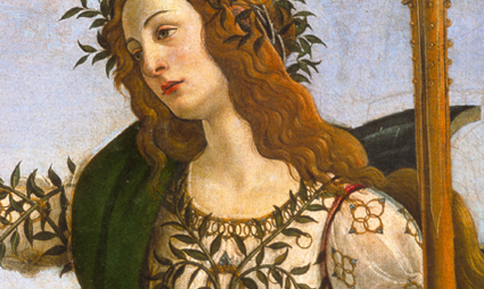

Botticelli
Malarstwo Sandro Botticellego (1445-1510) stało się jednym z symboli włoskiego renesansu. Piękno idealne oraz odświętna, dworska atmosfera, wypełniające jego obrazy, uczyniły z jego malarstwa synonim sztuki Złotego Wieku, epoki panowania we Florencji rodu Medyceuszy.
Pierwsza wystawa prac Botticellego w Niemczech, jaką przygotowuje frankfurckie Städel Museum, zaprezentuje około 80 prac artysty oraz jego współczesnych. W centrum ekspozycji znajdą się dwa monumentalne wizerunki związane z rodziną Medyceuszy. Portret Giuliana de Medici (National Gallery w Waszyngtonie) oraz idealizowany wizerunek piękności (Städel Museum, Frankfurt/Main), przedstawiający Simonettę Vespucci, po raz pierwszy będzie można podziwiać w jednym miejscu.
Botticelli był obok Verrocchia, Ghirlandaia oraz braci Pollaiuolo jednym z najznamienitszych mistrzów malarstwa florenckiego drugiej połowy piętnastego stulecia. Dzięki mecenatowi Medyceuszy oraz licznym zamówieniom cieszył się najwyższym uznaniem także poza granicami rodzinnego miasta. Należał również do grona artystów, którzy na polecenie papieża Sykstusa IV zostali wezwani do Rzymu, by swymi pracami ozdobić słynną Kaplicę Sykstyńską.
Obrazy prezentowane na wystawie, wypożyczone z licznych światowych muzeów, pozwolą unaocznić doniosłość artystycznej inwencji Botticellego i jego wpływ na malarstwo u progu ery renesansu.
Botticelli
Städel Museum, Frankfurt/Main, od 13 listopada 2009 do 28 lutego 2010.